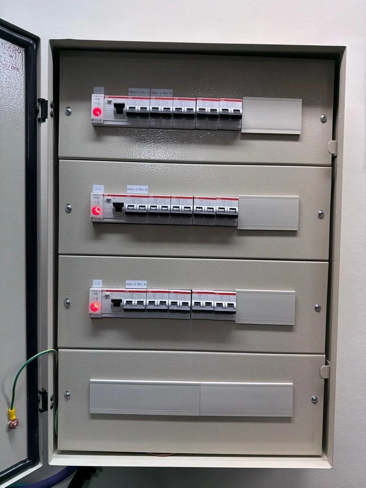

GUÍA 03 · ELECTRICIDAD
Cuándo conviene revisar la instalación eléctrica de una vivienda
Señales y cambios de uso que justifican pedir una evaluación profesional, sin abrir tableros ni intervenir la instalación.

La instalación eléctrica suele quedar fuera de la vista mientras todo parece funcionar. Pero una reforma, nuevos equipos o señales que se repiten pueden ser un buen motivo para consultar. Esta guía te ayuda a ordenar qué observar y qué contar, sin intentar diagnosticar el problema por tu cuenta.
01 / CAMBIOS DE USO
Antes de sumar equipos importantes
Un aire acondicionado, un horno eléctrico o un sistema de calefacción pueden cambiar los consumos de una vivienda. Si estás por incorporar varios equipos o reformar un ambiente, conviene consultar cómo evaluar la instalación existente antes de definir la conexión.
La antigüedad de la vivienda, por sí sola, no confirma que la instalación esté en mal estado. Tampoco alcanza con que las luces enciendan para saber si la instalación es adecuada para un uso nuevo. La evaluación depende de las características concretas del lugar y la debe realizar una persona calificada.
02 / SEÑALES PARA CONSULTAR
Prestá atención a lo que cambia o se repite
Luces que varían de intensidad, olor inusual cerca de un tomacorriente, marcas oscuras, zumbidos o partes que se sienten demasiado calientes son observaciones que conviene comunicar. No confirman por sí mismas cuál es la causa, pero ayudan a explicar por qué querés pedir una revisión.
Si ves cables deteriorados o conexiones expuestas, mantené distancia y evitá tocarlos. No muevas muebles ni retires tapas para inspeccionar una zona. Una foto solo suma si podés tomarla desde un lugar seguro, sin acercarte a partes dañadas.
03 / PROTECCIONES
Si una protección se activa varias veces
Si una llave térmica o un interruptor diferencial se desconecta de manera reiterada, no lo tomes como una molestia para resolver anulando la protección. No la reemplaces por otra de mayor capacidad ni la trabes para que no se desconecte. El motivo requiere evaluación; desde un mensaje o una fotografía no se puede determinar la causa.
Contá qué estaba funcionando cuando ocurrió, si pasó una vez o varias y si hubo cambios recientes en el ambiente. No vuelvas a encender equipos ni a reproducir la situación para obtener más información.
04 / MANTENIMIENTO
La antigüedad no es el único dato
Además de los cambios de uso y las señales visibles, podés consultar cuándo se revisó la instalación por última vez. El ENRE difunde como buena práctica realizar mantenimiento periódico de instalaciones y aparatos, al menos cada cinco años. Es una orientación general: no diagnostica una vivienda ni reemplaza la evaluación de una condición concreta.
Consultar las recomendaciones de seguridad eléctrica del ENRE ↗
05 / PREPARAR LA CONSULTA
Qué información ayuda a empezar
Podés indicar barrio o localidad, tipo de vivienda, qué observaste y desde cuándo sucede. Si incorporaste un equipo o hiciste una reforma recientemente, mencioná ese cambio. No hace falta que identifiques componentes ni que envíes la dirección exacta en el primer mensaje.
JM Eléctric ofrece instalaciones y mantenimiento eléctrico, con atención en CABA y alrededores. El alcance de una revisión y la cobertura para cada caso se confirman directamente. La consulta inicial no implica un diagnóstico, una visita acordada ni un presupuesto definitivo.
SEGURIDAD
Si hay humo, chispas o una descarga
Alejate del sector y evitá tocar enchufes, equipos o tableros. No uses agua ni intentes reparar la instalación. Si hay fuego o alguien está en peligro, contactá a los servicios de emergencia de tu zona. Un mensaje comercial no reemplaza la atención de una emergencia.
CONSULTÁ CON UN PROFESIONAL
¿Querés consultar por tu instalación?
Atención en CABA y alrededores. Consultá la cobertura y el alcance para tu caso.